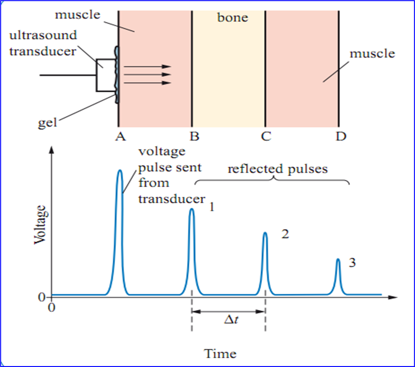
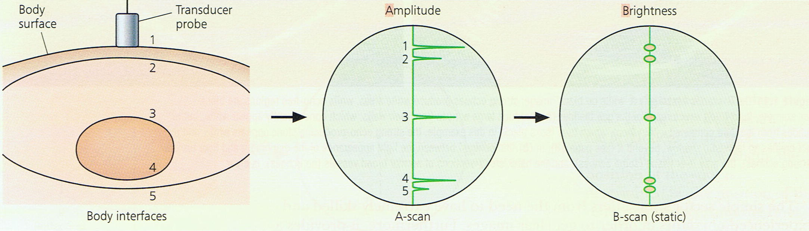
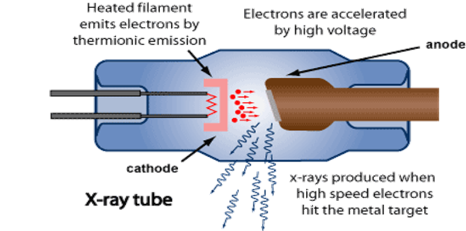
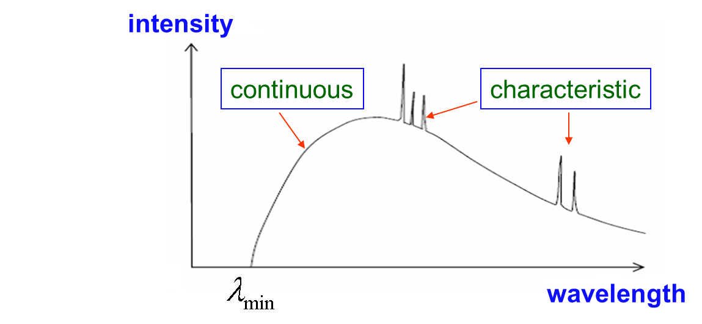
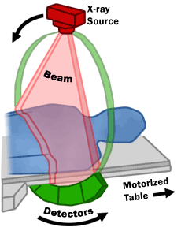
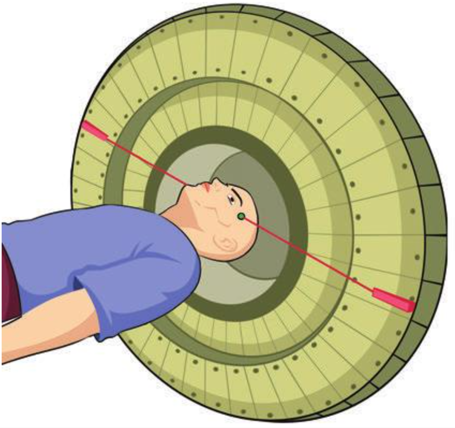

Introduction: What is Medical Physics?
- Why is ultrasound preferred for scanning a fetus, but not for imaging the lungs?
- Why does bone show up clearly on an X-ray image?
- Why can PET show function while CT mainly shows structure?
- Why do many questions ask you to justify the choice of imaging technique?
Medical physics applies wave, quantum, and nuclear physics to diagnosis and monitoring. In this unit, the key exam skill is not just recalling definitions, but comparing how each imaging method works and what information it reveals.
- Ultrasound - high-frequency sound; non-ionizing; excellent for soft tissue boundaries and motion
- X-rays / CT - ionizing electromagnetic radiation; strong absorption differences reveal internal structure
- PET - radioactive tracer inside the body; highlights metabolic activity and function
| Technique | Physics source | Best for | Main limitation |
|---|---|---|---|
| Ultrasound | Sound waves | Soft tissue, motion, pregnancy | Poor through air or bone |
| X-ray / CT | Ionizing EM radiation | Dense structures, cross-sections | Radiation dose |
| PET | Radioactive tracer + annihilation photons | Metabolic function | Short-lived tracers, lower anatomical detail |
1. Ultrasound
Principles of Ultrasound
Ultrasound refers to sound waves with frequencies above the upper limit of human hearing (>20 kHz). Medical ultrasound typically uses frequencies between 1-15 MHz.
- No harmful side effects (non-ionizing radiation)
- Real-time imaging capability
- Relatively inexpensive and portable
- Excellent for soft tissue imaging and fetal monitoring
Frequency and Resolution
There is a trade-off between frequency and penetration depth:
- High frequency - short wavelength - high resolution - fast attenuation - shallow penetration
- Low frequency - long wavelength - lower resolution - slow attenuation - deep penetration
The Piezoelectric Effect
For maximum amplitude, the crystal thickness must be half the wavelength of the ultrasound:
\[t = \frac{\lambda}{2}\]
Acoustic Impedance
When ultrasound reaches a boundary between two media, reflection occurs. The amount of reflection depends on the acoustic impedance of each medium.
\[Z = \rho v\]
Where:
- \(Z\) = acoustic impedance (kg m^-2 s^-1 or Rayls)
- \(\rho\) = density of the medium (kg m^-3)
- \(v\) = speed of sound in the medium (m s^-1)
\[R = \left(\frac{Z_2 - Z_1}{Z_2 + Z_1}\right)^2\]
Coupling Gel
- Without gel: skin-air mismatch - 99% reflected at surface
- With gel: eliminates air gap - most ultrasound enters body
A-scan and B-scan
A-scan (Amplitude scan)
- 1D pulse-echo technique
- Time between pulse and echo - depth of interface
- Amplitude of echo - reflectivity at interface
- Must be pulsed (transducer cannot emit and detect simultaneously)
B-scan (Brightness scan)
- 2D cross-sectional image from many A-scans
- Dot position = interface location
- Brightness = reflection intensity


2. X-rays
X-ray Production
X-rays are electromagnetic radiation with wavelengths from 10^-8 m to 10^-13 m. They have the same nature as gamma-rays but differ in origin.
X-ray Tube
The X-ray tube consists of:
- Cathode (heated filament) - emits electrons
- Anode (tungsten target) - electrons strike here, producing X-rays
- High voltage - accelerates electrons from cathode to anode

- Penetration (hardness) proportional to accelerating voltage (kVp)
- Intensity proportional to filament current (mA)
X-ray Spectrum
The X-ray spectrum consists of two components:
Continuous Spectrum (Bremsstrahlung)
Caused by electrons decelerating in the target. As electrons lose different amounts of energy, they produce X-rays of different wavelengths, creating a continuous spectrum.
Cut-off Wavelength
\[E_{\text{max}} = eV\]
Minimum wavelength (cut-off):
\[\lambda_{\text{min}} = \frac{hc}{eV}\]
Characteristic Peaks
Discrete peaks caused by electrons knocking inner shell electrons out of tungsten atoms. When outer electrons fall to fill the vacancies, X-rays of specific energies are emitted.

Attenuation
X-rays are attenuated (reduced in intensity) as they pass through matter. The attenuation follows an exponential law:
\[I = I_0 e^{-\mu x}\]
Where:
- \(I\) = intensity after passing through material
- \(I_0\) = initial intensity
- \(\mu\) = linear attenuation coefficient (m^-1)
- \(x\) = thickness of material (m)
Note: This equation applies to parallel beams only.
CT Scanning
Computed Tomography (CT) uses rotating X-ray tubes and detector rings to produce cross-sectional images of the body.
- Multiple X-ray projections from different angles
- Computer reconstruction of cross-sectional slices
- Higher radiation dose than plain X-ray
- Excellent for detecting internal injuries and diseases

3. PET Scanning
Positron Emission Tomography (PET) is a nuclear medicine imaging technique that produces 3D images of functional processes in the body.
- PET = internal imaging (tracer from within the body)
- CT/Ultrasound = external source imaging
Annihilation
A positron (antimatter electron) is emitted during beta+ decay. When it meets an electron, both particles annihilate.
\[e^+ + e^- \rightarrow 2\gamma\]
- Two gamma photons produced, each with energy 0.511 MeV
- Photons emitted at 180 degrees to each other
- Momentum before = 0, so momentum must be conserved
Radiotracers
- Fluorine-18 - undergoes beta+ decay; travels 1-2 mm before annihilating
- FDG (Fluorodeoxyglucose) - glucose analog; metabolically active cells (cancer, neurons) avidly uptake it
- Short half-life requires on-site cyclotron for production
Detection
PET scanners use rings of detectors around the patient:
- Time coincidence: two gamma-rays arrive simultaneously at opposite detectors
- This defines the Line of Response (LOR)
- Time difference between detections indicates off-center position

- Detecting cancer and metastases
- Brain imaging (epilepsy, dementia)
- Assessing heart function
4. Key Equations
| Equation | Meaning |
|---|---|
| \(Z = \rho v\) | Acoustic impedance |
| \(R = \left(\frac{Z_2 - Z_1}{Z_2 + Z_1}\right)^2\) | Reflection coefficient |
| \(t = \frac{\lambda}{2}\) | Resonance crystal thickness |
| \(E_{\text{max}} = eV\) | Maximum X-ray photon energy |
| \(\lambda_{\text{min}} = \frac{hc}{eV}\) | X-ray cut-off wavelength |
| \(I = I_0 e^{-\mu x}\) | X-ray attenuation |
| \(e^+ + e^- \rightarrow 2\gamma\) | PET annihilation (0.511 MeV each) |
5. P4 Checklist
Tick off when you can write these from memory:
- Remember the trade-off between ultrasound frequency and penetration depth
- For X-rays, higher voltage means shorter wavelength (harder X-rays)
- PET requires two photons detected simultaneously (momentum conservation)
- CT produces cross-sectional images unlike plain X-rays